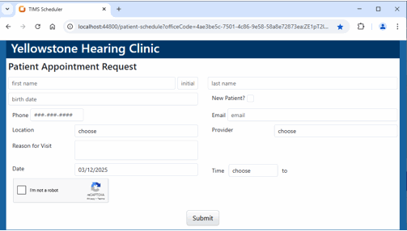
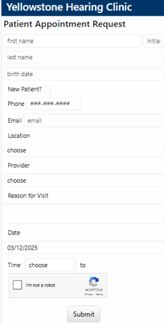
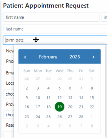
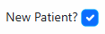
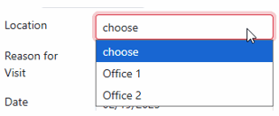
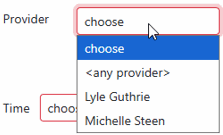
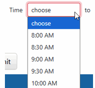
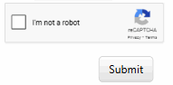
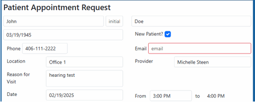
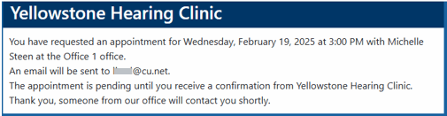

Requesting an Appointment Online
Prospective or existing patients will be able to access the practice online scheduler page from any computer, phone, or tablet with a browser and internet connection. Depending on the device they use, the screen will look similar to this. Your practice name, as entered in setup will appear at the top.
|
Computer:
 |
Phone:  |
- All fields are required, except for Initial.
- Date fields (birth date and Date of appointment) must be entered in a valid date format - either by using the popup date picker or entering directly.

- The patient can check the New Patient? box if they have never been seen at your office before. This has no effect on the actual appointment made however, it is just for informational purposes.

- Email must be in a valid email address format (username@domain.com).
- Location will only show those sites that have been designated for online scheduling in setup.

- Provider will only show those providers that have been designated for online scheduling in setup.

- If the patient is unsure which Provider to select (new patient), they can choose "<any provider>". This will assign the first provider that is available to the appointment. The provider can be changed later in TIMS as needed.
- Reason for Visit is also required. This is where the patient will briefly describe the purpose of their appointment request. There is a 50 character limit.
- Date is the desired appointment date. This can be entered either by using the popup date picker or entering directly. The date chosen must be for the next day or later. It cannot be for today or in the past.
- The Time field will display times that are available based on the Location, Provider, and Date selected. If no times appear in the list, that will mean there is nothing available and the patient must choose either a different day, provider, or location. Appointment requests will be saved as 1 hour, so for a slot to be available there must be at least an hour available.

- Once the information has been entered, the patient should click the "I'm not a robot" box, and then Submit. If any required information has been left blank, that field will be highlighted in red and the form will not submit.


- After a successful submission, the message that was created in setup will appear on the screen. An email with the same message will also be sent to the email entered on the form.

- Once the appointment request has been submitted and replication has occurred, the appointment will appear in TIMS Appointments in the Patient Appointment Requests list and also on the appointment grid for the patient "Online Request".